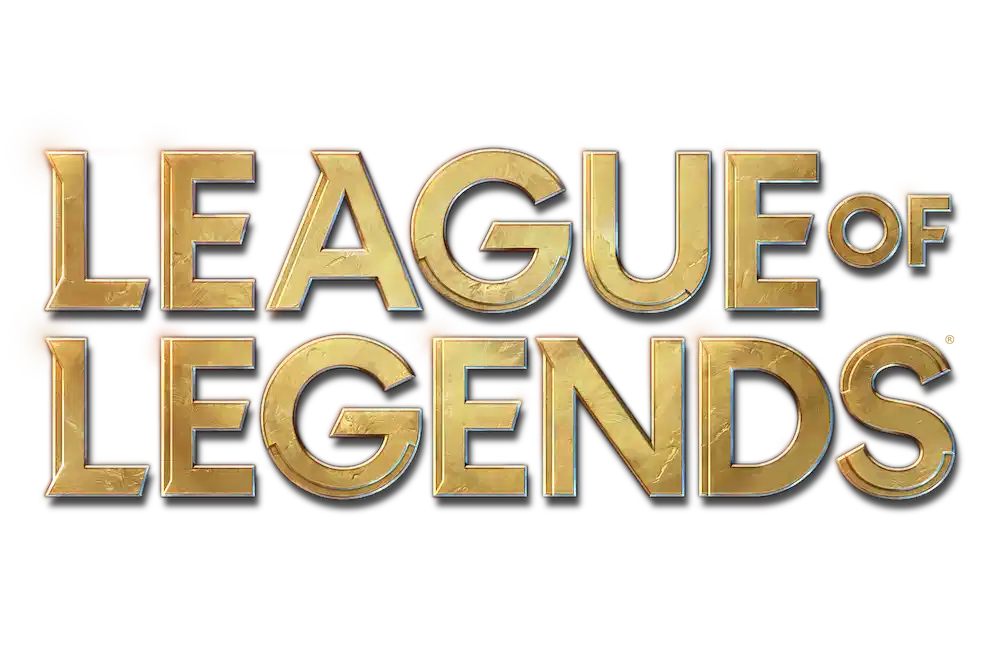

Video Games
As i said since my childhood i was always interested in video games. They have been a significant part of my life, helping me understand the difference between reality and fantasy, improving my problem solving ability, reflexes and creativity, providing entertainment, challenges, and a way to socialize with people anywhere in the world.
1 Minecraft © Mojang Studios
Minecraft
Minecraft is a sandbox video game developed by Mojang Studios. The game allows players to build anything as long as they can imagine. And as someone who has been playing Minecraft for exactly 11 years, I can say that this game has really had a big impact on my brain development. Maybe the game itself doesn't get updated very often, but the modding community that has kept this game alive for years was one of the things that got me interested in the field.
1 Fallout New Vegas © Bethesda Game Studios
Fallout New Vegas is a post-apocalyptic role-playing video game developed by Obsidian Entertainment and published by Bethesda Softworks. Although its gameplay and graphics may not be the best for its time, its solid story and the fact that it is one of the best in its genre in terms of role-playing particularly drew me to Fallout: New Vegas. During the hours I spent at the beginning, it was really difficult to decide which community to help and which to destroy in the game. No matter what scenario you have in mind, your choices in this game genuinely make a difference, allowing you to easily bring that scenario to life in practice.
1 Mount And Blade 2: Bannerlord © TaleWorlds Entertainment
Mount And Blade 2: Bannerlord
Mount And Blade 2: Bannerlord is an action role-playing game developed by TaleWorlds Entertainment. I learned about it from my cousin and recently started playing. It supports smithery, merchantry, banditry, mercenary work, a king, and many more playstyles and scenarios, so it's definitely a game I can play for hours on end.
1 Final Fantasy 7 © Square Enix
Final Fantasy 7
Final Fantasy 7 is a role-playing video game developed by Square Enix. A fantastic game I played on an emulator back in the day and finished twice. Maybe it was because I was young at the time, but it really made a deep impression on me. The truly profound character development, the varied tactical approach to battles for its time, and especially the story make it one of those experiences I'll never forget.
1 Ultrakill © Arsi Patala
Ultrakill
Ultrakill is a retro-style first-person shooter video game developed by Arsi Patala. Ultrakill is one of my favorite games, even without much context. It has a genuinely interesting concept in terms of lore, but the reason I love this game is definitely the gameplay and the music. Starting with the gameplay, even though it's constantly compared to another example of its genre, Doom Eternal, Ultrakill creates a fantastic gameplay tempo by blending a few mechanics very well. In short, your creativity limits your gameplay. Of course, that alone isn't enough. The style points awarded based on how you use different weapons can be a serious motivation for perfectionists. Add to all this the fast-paced rock-metal style music, and you get something truly unique.
1 Elden Ring © FromSoftware
Elden Ring
Elden Ring is an action role-playing video game developed by FromSoftware. The only game I've ever completed 100% by dedicating 138 hours to it. It's an open-world game that motivates you to explore the ring and features genuinely challenging bosses, making it a truly enjoyable experience that had me hooked. The variety of weapon abilities, different builds, a good looking world and the atmospheric orchestral music that perfectly fits the setting are what drove me to play it so much.
1 League of Legends © Riot Games

League of Legends is a multiplayer online battle arena video game developed and published by Riot Games. Among gaming communities, League of Legends (LoL) is often the subject of ridicule due to players dedicating excessive time to the game and engaging in toxic behavior, yet it remains the most successful example of the MOBA genre today. I couldn't leave out LOL, which has continuously grown since 2009, captivating me with its e-sports passion, character variety, and gameplay diversity, as well as its side content like series games and music, ultimately keeping me hooked for years.